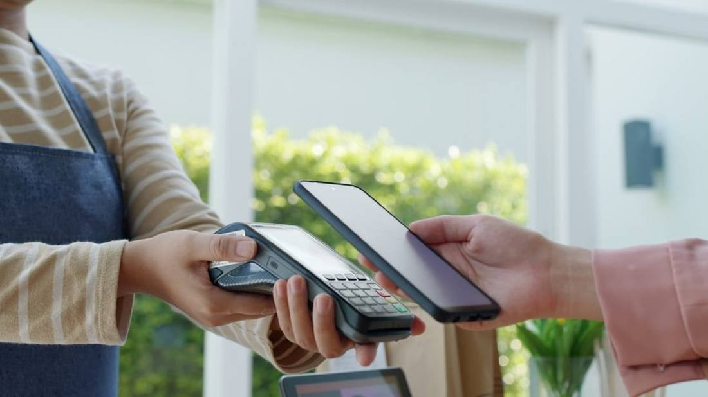

US$17 Billion: DoorDash Puts Instacart in Its Pocket
On October 29, 2026, DoorDash announced it will acquire Instacart at US$65 per share, about US$17 billion, with at least 75% paid in cash. Closing is expected in late 2027 or the first half of 2028, subject to shareholder and regulatory approval.

- 01THE DEAL — October 29, 2026: the two sides announce a definitive agreement.
- 02THE TERMS — US$65 per share, at least 75% cash, stock capped at 25%.
- 03THE BRIDGE — JPMorgan provides a 364-day bridge loan; the agreement has no financing condition.
WHAT HAPPENEDWhat Happened
DoorDash and Instacart announced a definitive agreement on October 29, 2026. DoorDash will acquire Instacart at US$65 per share, an equity value of about US$17 billion and a 26% premium, benchmarked against the October 22 close, the last trading day before media reports of a possible deal surfaced.
The consideration structure is specific. Shareholders can elect US$65 in cash per share, or 0.3372 DoorDash shares, or a mix of the two, with cash making up at least 75% and stock capped at 25%, allocated pro rata if oversubscribed. JPMorgan is providing a 364-day senior unsecured bridge loan with US$13 billion committed, and the agreement itself carries no financing condition.
DoorDash is buying more than order volume. Instacart keeps its brand, app and enterprise technology products; what DoorDash gets is grocery fulfilment technology, retailer relationships and an advertising business. The two companies continue to operate independently until closing, a window of a year at best and longer at worst.
GROCERY FIRSTTake Grocery First, Then Talk Local Commerce
DoorDash started in restaurant delivery, and grocery is its closest step to local commerce. Instacart's retailer network and enterprise technology let DoorDash sell merchants a ready-made online grocery solution directly, rather than just adding a delivery entry point.
By scale, this is the largest acquisition in DoorDash's history, exceeding the roughly US$8 billion Wolt and Deliveroo deals before it. The bigger the scale, the harder the integration; DoorDash's early commitment to keep the brand and products is a way of steadying retailers first and talking synergy later.
THE LONG WAITThe Long Closing Period Is Itself a Test
More than a year separates announcement from expected closing. A shareholder vote, antitrust waiting periods and approvals in several countries can each drag out the timetable. Instacart has already cancelled its November 5 earnings call and suspended guidance, effectively entering deal mode early.
During that time the two companies must still compete separately. Employees, merchants and advertising clients are all watching whether the deal wobbles, and management must push approvals forward while keeping the core business from losing speed during the wait.
THE OLD PRICEThe Price Is a Large Step Down from What Was Discussed Five Years Ago
The two sides talked once before, in 2021, when the valuation under discussion was between US$40 billion and US$50 billion; no deal resulted. Five years later the agreed price is about US$17 billion, a figure more than halved, reflecting the market's repricing of delivery growth.
For Instacart shareholders, US$65 plus a 26% premium is a respectable exit. For DoorDash, buying low raises the margin for regulatory and integration error, so the deal's success no longer hinges on price alone.
THE SHIFTWhat Changed
SIGNAL JUDGMENT — ANALYSISThe War for Local Commerce Starts at the Grocery Checkout
Tokenta Signal's judgment: what DoorDash is buying this time is merchant relationships and a fulfilment system, not order numbers. The longer closing drags on, the greater the regulatory and integration variables; a cheap price is only the entry ticket.
WHAT REMAINS UNCERTAINWhat Remains Uncertain
EVIDENCEEvidence
The original report confirms DoorDash and Instacart announced a definitive agreement on October 29, 2026, at US$65 per share and an equity value of about US$17 billion, with at least 75% in cash and stock capped at 25%.
PRIMARY SOURCESPrimary Sources
- Securities.io: DoorDash Agrees to $17 Billion Cash-and-Stock Acquisition of Instacart
https://www.securities.io/doordash-agrees-to-17-billion-cash-and-stock-acquisition-of-instacart/ - TipRanks: DoorDash to Acquire Instacart in Major Cash-Stock Deal
https://www.tipranks.com/news/company-announcements/doordash-to-acquire-instacart-in-major-cash-stock-deal